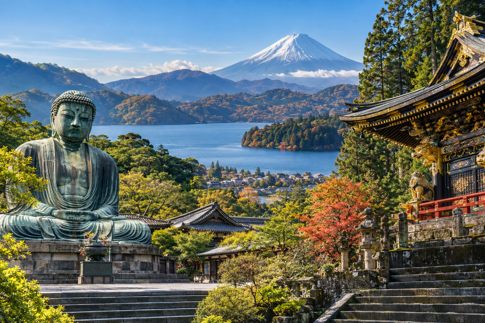
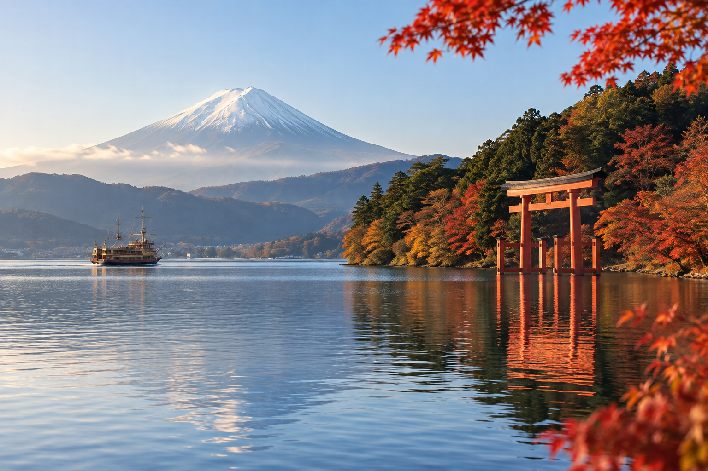
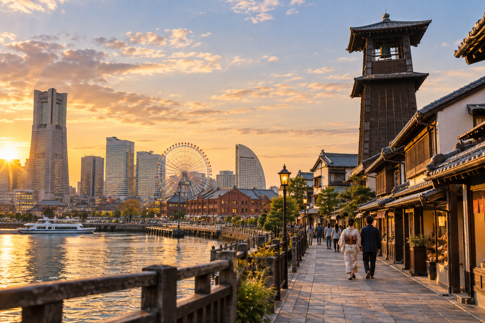

Best Day Trips From Tokyo for First-Time Visitors
Tokyo can easily fill an entire trip, but one day outside the city can show you a very different side of Japan. Within a few hours of central Tokyo, you can reach historic temple towns, mountain areas, hot springs, coastal neighborhoods, and places with views of Mount Fuji.
The mistake is assuming every popular destination works equally well as a day trip. Kamakura is relatively easy and flexible. Nikko requires a longer travel day. Hakone involves more local transport after arrival. A Mount Fuji viewing trip can be excellent in clear weather but disappointing when clouds hide the mountain.
For first-time visitors, I recommend choosing a day trip based on what you want to experience, how much travel time you accept, and whether the destination depends heavily on weather. This guide compares the strongest options rather than giving a full itinerary for each place.
Best Tokyo Day Trips at a Glance

| Day Trip | Best For | Travel Effort | Weather Dependence | My First-Time Rating |
|---|---|---|---|---|
| Kamakura | Temples, history, coast | Easy | Low to moderate | Excellent |
| Nikko | Shrines, history, mountains | Higher | Moderate | Excellent |
| Hakone | Onsen , scenery, Fuji views | Moderate to high | Moderate | Excellent |
| Lake Kawaguchiko | Mount Fuji views | Moderate | High | Excellent on a clear day |
| Yokohama | Waterfront, food, easy city escape | Easy | Low | Very good |
| Kawagoe | Traditional streets, shorter trip | Easy | Low | Very good |
There is no single best choice for everyone.
For a first visit, I would think of them like this:
Best easy first day trip: Kamakura
Best for history and impressive shrines: Nikko
Best for hot springs and mountain scenery: Hakone
Best if seeing Mount Fuji is the priority: Lake Kawaguchiko
Best easy urban alternative: Yokohama
Best lighter traditional-town option: Kawagoe
Should You Take a Day Trip From Tokyo?
Not automatically.
If you only have three full days in Tokyo, I would normally stay in the city.
Removing one day means giving up one-third of your Tokyo sightseeing time.
That is why our Tokyo 3-Day Itinerary for First-Time Visitors stays entirely inside Tokyo.
With five full days, a day trip becomes easier to justify.
You can still spend four complete days exploring Tokyo and replace the least important city day with a destination outside the capital.
How Many Tokyo Days Should You Have Before Adding a Day Trip?
My starting rule is:
1–3 Full Tokyo Days
Stay in Tokyo unless the outside destination is one of the main reasons for your Japan trip.
4 Full Days
A day trip is possible, but think carefully about what you will remove.
5+ Full Days
A day trip becomes much easier to include.
This does not mean you must leave Tokyo once you reach five days.
Our Tokyo 5-Day Itinerary for First-Time Visitors shows that the city can easily fill all five days.
Choose the Experience First
Do not begin by asking:
“What is the most famous day trip from Tokyo?”
Ask:
“What do I want that Tokyo itself does not give me?”
Choose Kamakura If You Want:
- ✓Temples
- ✓Historic atmosphere
- ✓Great Buddha
- ✓Coastal scenery
- ✓Easier transport
Choose Nikko If You Want:
- ✓Ornate shrines
- ✓UNESCO World Heritage sites
- ✓Mountain surroundings
- ✓Deeper historical interest
Choose Hakone If You Want:
- ✓Hot springs
- ✓Mountain transport
- ✓Lake scenery
- ✓A possible Mount Fuji view
Choose Lake Kawaguchiko If You Want:
- ✓Mount Fuji to be the main focus
- ✓Lake scenery
- ✓Photography
- ✓A weather-dependent outdoor day
Choose Yokohama If You Want:
- ✓Very easy travel
- ✓Waterfront atmosphere
- ✓Food
- ✓Another Japanese city without a long travel day
Choose Kawagoe If You Want:
- ✓Traditional streets
- ✓A lighter day
- ✓Shorter travel
- ✓An alternative to another full-day mountain trip
Do Not Choose by Instagram Photo Alone
Some day trips depend heavily on:
- ✓Weather
- ✓Season
- ✓Crowds
- ✓Transport connections
A photograph of Mount Fuji does not mean you will see the mountain clearly on your specific day.
A quiet temple photo does not show the weekend crowd around it.
Plan for the real destination, not one perfect photograph.
1. Kamakura: Best Overall Day Trip for Many First-Time Visitors
If someone asked me for one easy Tokyo day trip for a first visit, Kamakura would be near the top of my list.
Kamakura was once an important political center of Japan and is known today for:
- ✓Buddhist temples
- ✓Shinto shrines
- ✓Great Buddha
- ✓Historic atmosphere
- ✓Shopping streets
- ✓Hiking
- ✓Nearby coast
It gives you a major change from Tokyo without requiring an extremely long travel day.
Why Kamakura Works So Well?
The biggest advantage is the balance between:
travel effort
and:
how different the destination feels from Tokyo.
You can leave a huge modern city in the morning and spend the day around temples, older streets, green hills, and the coast.
Official JNTO guidance puts Kamakura Station at about 55 minutes from Tokyo Station on the JR Yokosuka Line.
That makes it one of the easier major day trips on this list.
Best For
Choose Kamakura if you like:
- ✓Temples
- ✓Japanese history
- ✓Walking
- ✓Traditional streets
- ✓Coastal scenery
- ✓Photography
It also works well for travelers who do not want to spend four hours of the day sitting on trains.
Main Kamakura Experiences
For a first day trip, the best-known experiences include:
- ✓Great Buddha of Kamakura
- ✓Hasedera
- ✓Tsurugaoka Hachimangu
- ✓Komachi-dori
- ✓Historic temples
- ✓Coastal areas
JNTO also highlights Kamakura's Great Buddha, Zen temples, Komachi-dori, beaches, and nearby Enoshima among the area's main attractions.
You do not need to visit all of them in one day.
The Great Buddha of Kamakura
The Great Buddha, or Kamakura Daibutsu, is one of the destination's defining sights.
It is a large bronze Buddha associated with Kotoku-in temple.
For many first-time visitors, this is one of the main reasons to choose Kamakura.
But do not design the entire day around one statue.
The value of Kamakura comes from combining several nearby cultural areas.
Hasedera
Hasedera fits naturally with the Great Buddha side of Kamakura.
The temple is known for:
- ✓Temple grounds
- ✓Gardens
- ✓Religious buildings
- ✓Views toward the coast
If you are already visiting the Great Buddha, pairing the two can make geographical sense.
Tsurugaoka Hachimangu
Another major cultural site is Tsurugaoka Hachimangu.
It sits closer to central Kamakura and is naturally connected with the approach through the town.
You can combine it with streets around Kamakura Station without creating another long transfer.
Komachi-dori
Komachi-dori is a popular shopping street close to Kamakura Station.
Expect:
- ✓Food
- ✓Snacks
- ✓Souvenirs
- ✓Shops
- ✓Crowds
It is convenient for lunch or browsing between cultural sites.
Do not spend the whole afternoon in queues for popular snacks unless food shopping is one of your priorities.
Kamakura Can Include the Coast
One advantage Kamakura has over several other day trips is access to the coast.
If the weather is good and you have enough time, you can include a coastal section.
That adds another contrast with central Tokyo.
Should You Add Enoshima?
You can combine Kamakura + Enoshima, but I would not call it mandatory.
Adding Enoshima makes the day longer and more active.
Add Enoshima If:
- ✓You start early
- ✓Coastal scenery matters
- ✓You are comfortable with significant walking
- ✓You do not plan to visit many Kamakura temples
Skip Enoshima If:
- ✓History is your main interest
- ✓You prefer a slower day
- ✓You start late
- ✓You are already visiting several temples
A complete Kamakura day is better than a rushed Kamakura-and-Enoshima checklist.
How Much Walking Is Involved?
Expect a meaningful amount.
Even though local trains connect parts of the area, you may spend significant time:
- ✓Walking between sites
- ✓Exploring temple grounds
- ✓Walking shopping streets
- ✓Moving toward coastal areas
Wear comfortable shoes.
Is Kamakura Good in Rain?
Yes, within reason.
Clouds do not remove the main reason for visiting Kamakura in the same way they can affect a Mount Fuji viewing trip.
Temples and historic streets can still be worthwhile.
Heavy rain will make:
- ✓Walking
- ✓Gardens
- ✓Coastal areas
less enjoyable.
But Kamakura is generally less weather-dependent than Lake Kawaguchiko.
Is Kamakura Good for Families?
Yes.
It is one of the easier choices on this list because:
- ✓Travel time is manageable
- ✓You can shorten the route
- ✓There are food options
- ✓You do not need complicated mountain transport
Families should avoid trying to see every temple.
Choose a few strong stops.
Is Kamakura Good for Older Travelers?
Yes, if you reduce unnecessary walking.
Use local transport where helpful and focus on the major sites you care about.
A slower day can still feel complete.
Who Should Skip Kamakura?
Consider another option if:
- ✓Temples have low priority
- ✓You already have extensive Kyoto temple time planned
- ✓Mount Fuji is your main goal
- ✓Hot springs are a major priority
For a traveler spending several days in Kyoto later, Kamakura can still be worthwhile, but it is reasonable to choose a destination that adds a more different experience.
Kamakura vs Kyoto: Is It Repetitive?
Not exactly.
Both include important temples and historic sites, but they are different destinations with different histories and settings.
However, if your wider Japan trip already gives you:
5 days Kyoto + Nara
you may decide that your Tokyo day trip should focus on:
- ✓Fuji views
- ✓Hakone
- ✓Another type of landscape
This is where the wider itinerary should influence the day-trip choice.
My Kamakura Verdict
Best for: First-time visitors wanting culture without a difficult travel day.
Travel effort: Low to moderate.
Weather risk: Relatively low.
Full-day value: High.
My recommendation: One of the safest choices if you are unsure which Tokyo day trip to take.
2. Nikko: Best for World Heritage Shrines and Mountain History
Nikko is one of the strongest cultural day trips from Tokyo, but it requires more commitment than Kamakura.
The area combines:
- ✓Ornate shrines
- ✓Buddhist temples
- ✓Mountain scenery
- ✓Forest
- ✓Waterfalls
- ✓Lakes
- ✓Hiking
- ✓Hot springs
Its famous shrines and temples form a UNESCO World Heritage site.
The key planning issue is that Nikko town and the wider Nikko National Park are too large to cover properly in one rushed day.
Why Visit Nikko?
Nikko suits travelers who want a stronger sense of:
- ✓Japanese religious history
- ✓Tokugawa-era heritage
- ✓Elaborate architecture
- ✓Mountain surroundings
The famous Nikko Toshogu Shrine is dedicated to Tokugawa Ieyasu and is one of the area's defining sites. JNTO identifies it as part of the World Heritage shrine-and-temple complex.
How Long Does Tokyo to Nikko Take?
Plan roughly 1.5 to 2 hours each way, depending on your starting station and route.
Official JNTO guidance lists Nikko at about 1.5–2 hours from Tokyo, while direct or limited-express options from Asakusa and Shinjuku commonly take around two hours.
That means Nikko uses considerably more travel time than Kamakura.
Start early.
Main Ways to Reach Nikko
Depending on your Tokyo base and ticket strategy, common approaches include:
- ✓Tobu services from Asakusa
- ✓Limited express connections from Shinjuku
- ✓JR Shinkansen to Utsunomiya plus the JR Nikko Line
You do not need to choose the most complicated route simply to save a small amount of time.
For a day trip, simplicity matters.
What Should a First-Time Nikko Day Focus On?
This is the key decision.
I would choose one of two broad styles.
Option A: World Heritage Focus
Prioritize:
- ✓Toshogu
- ✓Rinnoji
- ✓Futarasan Shrine
- ✓Shinkyo Bridge
- ✓Historic central Nikko
This is the safer first-time day-trip plan.
Option B: Nature Focus
Move farther toward places such as:
- ✓Lake Chuzenji
- ✓Kegon Falls
- ✓Other mountain areas
But this adds substantial local travel.
Trying to combine the full heritage zone and the wider national park can create a very long day.
Toshogu Shrine
For most first-time Nikko visitors, Toshogu is the main cultural priority.
It is known for richly decorated shrine buildings and detailed carvings.
The surrounding World Heritage area contains several important sites close enough to combine.
From Nikko or Tobu-Nikko Station, buses serve the World Heritage area, while walking is also possible for travelers who want a longer approach. JNTO places the bus ride at roughly 15 minutes and the walk at around 45 minutes.
Shinkyo Bridge
Shinkyo Bridge is one of the visual gateways to the historic area.
It can fit naturally before or after the major shrine-and-temple sites.
Do not treat it as another destination requiring a separate transport plan.
Should You Add Lake Chuzenji?
This is where Nikko day trips often become overloaded.
Lake Chuzenji is farther into the national park.
Current JNTO guidance puts the bus trip from Tobu Nikko Station toward the Lake Chuzenji area at roughly 50 minutes.
That is nearly another hour each way on top of Tokyo-to-Nikko travel.
Add Lake Chuzenji If:
- ✓Nature is a major priority
- ✓You start very early
- ✓You are willing to reduce temple time
- ✓Seasonal scenery is important
Skip It If:
- ✓Toshogu and World Heritage sites are your main reason for visiting
- ✓You prefer a relaxed day
- ✓You arrive late
- ✓You dislike long bus travel
Kegon Falls
Kegon Falls sits near the Lake Chuzenji side of the area.
It can pair naturally with the lake if you choose a nature-heavy Nikko day.
Do not add it simply because it appears on every Nikko highlights list.
The destination is spread out.
Geography should control the plan.
Nikko Is Better as an Overnight Stay for Some Travelers
This is important.
JNTO's own Nikko itinerary recommends two days for combining the historic sites with the wider natural attractions.
That does not mean Nikko fails as a Tokyo day trip.
It means you need to choose a narrow day-trip focus.
If you want:
- ✓World Heritage sites
- ✓Lake Chuzenji
- ✓Waterfalls
- ✓Hiking
- ✓Onsen
consider staying overnight instead.
Nikko in Autumn
Nikko is well known for autumn scenery.
That also means popular fall periods can bring:
- ✓More visitors
- ✓Busy buses
- ✓Traffic
- ✓Longer travel times
Seasonal beauty can improve the experience while making logistics harder.
Build more buffer than you would on a normal weekday.
Nikko in Winter
Winter can provide a very different atmosphere, especially around snowy mountain areas.
But conditions can affect:
- ✓Roads
- ✓Walking
- ✓Bus travel
- ✓Clothing needs
If your first goal is simply the historic central zone, keep the route straightforward.
Is Nikko Good in Rain?
The shrine-and-temple area can still be impressive in light rain.
The nature-heavy version becomes more weather-sensitive.
If the forecast is poor, I would be more comfortable keeping:
central Nikko heritage
than committing to an ambitious mountain route.
Nikko for Families
Possible, but it is a longer day than Kamakura.
For younger children, I would focus on:
World Heritage area only
rather than adding Lake Chuzenji.
Long train + bus + walking combinations can make the day exhausting.
Nikko for Older Travelers
Again, focus matters.
Central Nikko can work well with:
- ✓Bus transport
- ✓Fewer sites
- ✓More breaks
Trying to combine distant nature areas can make the day physically demanding.
Who Should Choose Nikko Over Kamakura?
Choose Nikko if:
- ✓The World Heritage shrine complex strongly interests you
- ✓Mountain atmosphere matters
- ✓You accept a longer travel day
- ✓You want something more elaborate than a simple coastal temple town
Choose Kamakura if:
- ✓You want easier logistics
- ✓You prefer less travel
- ✓You want more flexibility
- ✓You like combining temples with coast and town streets
My Nikko Verdict
Best for: History, World Heritage architecture, and mountain atmosphere.
Travel effort: Moderate to high.
Weather risk: Moderate.
Full-day value: Very high if history interests you.
My recommendation: Excellent, but start early and choose either the heritage core or a more nature-focused route rather than trying to do everything.
3. Hakone: Best for Onsen, Lake Scenery and a Slower Mountain Day

Hakone is one of the most popular escapes from Tokyo because it combines several experiences that are difficult to get inside the city.
You can find:
- ✓Hot springs
- ✓Lake Ashi
- ✓Mountain scenery
- ✓Ropeways
- ✓Scenic trains
- ✓Art museums
- ✓Views of Mount Fuji when conditions are clear
But Hakone requires more planning than Kamakura.
It is not one compact town where you step off the train and walk between every major sight.
The attractions are spread across a wider mountain area.
Why Choose Hakone?
Choose Hakone if the main thing you want from your Tokyo day trip is:
a break from the city
rather than another historic urban destination.
It is particularly strong for travelers interested in:
- ✓Onsen
- ✓Scenic transport
- ✓Mountains
- ✓Lakes
- ✓Art
- ✓A slower pace
Official tourism guidance places Hakone-Yumoto at roughly 90 minutes from Shinjuku by Odakyu, while routes through Odawara can also provide access from Tokyo.
Hakone Is More Than a Mount Fuji Trip
This distinction is important.
You can sometimes see Mount Fuji from parts of Hakone.
But I would not choose Hakone if your only goal is:
“I must get the clearest possible Fuji view.”
Hakone's strength is the full experience:
- ✓Hot springs
- ✓Lake
- ✓Ropeway
- ✓Volcanic landscape
- ✓Mountain railway
- ✓Museums
If Fuji appears clearly, consider it an added benefit.
For a trip where Mount Fuji itself is the main subject, Lake Kawaguchiko is usually the stronger choice.
Hakone-Yumoto: The Main Gateway
For many visitors, Hakone-Yumoto is the starting point.
From there, local transport connects different parts of the Hakone area.
This may include:
- ✓Mountain railway
- ✓Cable car
- ✓Ropeway
- ✓Buses
- ✓Lake cruise
This is why a Hakone day can feel more complicated than Kamakura.
You need to understand the local route, not just the Tokyo-to-Hakone train.
The Hakone Scenic Loop
Many first-time visitors follow some version of the well-known Hakone circuit.
Depending on current service and your interests, it may connect areas such as:
Hakone-Yumoto → Gora → Owakudani → Lake Ashi → Hakone-machi or Moto-Hakone
using several forms of transport.
You do not need to complete every section.
The loop should help you see Hakone efficiently, not become a challenge you need to finish.
Hakone Tozan Railway
The Hakone Tozan Railway is part of the experience itself.
The scenic mountain section climbs through:
- ✓Forested valleys
- ✓Bridges
- ✓Tunnels
- ✓Steep terrain
Seasonal scenery can also add to the route.
For visitors who enjoy scenic railway travel, this gives Hakone an advantage over many other Tokyo day trips.
Owakudani
Owakudani is a volcanic area reached through Hakone's mountain transport network.
It is known for:
- ✓Volcanic landscape
- ✓Steam and sulfur activity
- ✓Mountain views
- ✓Famous black eggs
Weather and volcanic conditions can affect access or visibility.
Follow current local instructions if you plan to visit.
Lake Ashi
Lake Ashi, also called Lake Ashinoko, is one of Hakone's main scenic areas.
On a clear day, some viewpoints around the lake can provide Mount Fuji views.
You may also find:
- ✓Sightseeing cruises
- ✓Hakone Shrine
- ✓Lakeside scenery
- ✓Mountain views
Do not assume Fuji will be visible simply because a brochure shows it behind the lake.
Hakone Shrine
Hakone Shrine is another popular stop near Lake Ashi.
It is especially known for its lakeside torii gate.
The area can become busy with visitors waiting for photographs.
If the queue is long, decide whether one specific picture is worth a large part of your day.
The shrine itself deserves more attention than the photo spot alone.
Hot Springs Are a Major Reason to Choose Hakone
This is where Hakone clearly separates itself from Kawaguchiko and Kamakura.
Hakone is one of Japan's best-known hot-spring areas.
You can experience onsen through:
- ✓Ryokan
- ✓Day-use bathing facilities
- ✓Hotels
- ✓Public bathing facilities
If an onsen experience is one of your main Japan priorities, Hakone becomes much more attractive.
Day Trip or Overnight Stay in Hakone?
Hakone can work as a day trip.
But it may be even better as an overnight stop.
An overnight stay gives you time for:
- ✓Ryokan
- ✓Onsen
- ✓Kaiseki dinner
- ✓Slower sightseeing
- ✓Morning mountain scenery
This is especially useful on a route such as:
Tokyo → Hakone → Kyoto
rather than:
Tokyo → Hakone → Tokyo → Kyoto
If your wider itinerary allows it, Hakone can function as a stop between major cities.
When Hakone Works Best as a Day Trip
Choose a day trip if:
- ✓You want a sample of the area
- ✓You are keeping the same Tokyo hotel
- ✓You do not want another hotel change
- ✓You mainly want scenery and one or two key experiences
When I Would Stay Overnight
Consider one night if:
- ✓Onsen is a priority
- ✓You want a ryokan experience
- ✓You dislike rushed travel days
- ✓You want both sightseeing and relaxation
- ✓Hakone fits naturally between Tokyo and Kyoto
Hakone Freepass
Visitors planning multiple local transport rides may encounter the Hakone Freepass.
It can cover eligible transport around the Hakone area and is designed around the local transport network.
Whether it saves money depends on:
- ✓Your starting point
- ✓Exact route
- ✓Number of local rides
- ✓Trip length
Do not buy it automatically.
Check your planned Hakone route first.
How Much Time Does Hakone Need?
For a Tokyo day trip, expect a full day.
Leave early.
The day includes:
- ✓Tokyo-to-Hakone transport
- ✓Local mountain transport
- ✓Sightseeing
- ✓Return travel
A late start can quickly reduce what you can comfortably see.
Is Hakone Good in Rain?
It depends on your goal.
Still Good for:
- ✓Onsen
- ✓Museums
- ✓Some scenic transport
- ✓Relaxation
Less Ideal for:
- ✓Mountain views
- ✓Fuji views
- ✓Outdoor lake scenery
This makes Hakone more weather-resistant than a pure Fuji-viewing trip, but weather still changes the experience.
Hakone for Families
Hakone can be fun for families because the transportation itself can feel like part of the attraction.
Children may enjoy:
- ✓Mountain trains
- ✓Ropeway
- ✓Boats
But several transfers can also make the day tiring.
Keep the plan simple.
Hakone for Older Travelers
It can work well if you reduce the number of stops.
The local transport network helps, but moving between several modes takes time.
Do not attempt the entire sightseeing loop plus an onsen plus a museum in one short day.
Who Should Skip Hakone?
Consider another trip if:
- ✓Your only goal is a close Fuji view
- ✓You dislike multiple transport connections
- ✓Onsen and mountain scenery have low priority
- ✓You want an easier walking-based destination
Kamakura or Yokohama may be easier.
My Hakone Verdict
Best for: Onsen, mountain scenery and a more relaxed Japan experience.
Travel effort: Moderate to high.
Weather risk: Moderate.
Full-day value: High.
My recommendation: Excellent if you want more than just a Fuji photo. Consider an overnight stay if onsen is a major priority.
4. Lake Kawaguchiko: Best for Mount Fuji Views
If the main reason you want to leave Tokyo is:
“I want to see Mount Fuji.”
then Lake Kawaguchiko should be near the top of your list.
It is part of the Fuji Five Lakes area and offers some of the best-known views of Mount Fuji across a lake setting.
Unlike Hakone, where Fuji is only one part of a broader destination, Kawaguchiko can make the mountain the central focus of the day.
Why Choose Kawaguchiko?
Choose it for:
- ✓Mount Fuji views
- ✓Photography
- ✓Lake scenery
- ✓Cycling
- ✓Ropeway views
- ✓Museums
- ✓Seasonal landscapes
This is one of the most visually rewarding day trips when conditions are good.
The problem is that the best part of the experience cannot be guaranteed.
Fuji Visibility Is the Biggest Risk
Mount Fuji can disappear behind:
- ✓Clouds
- ✓Haze
- ✓Rain
- ✓Seasonal humidity
even when the mountain is physically right in front of you.
That makes Kawaguchiko more weather-dependent than Kamakura, Yokohama, or Kawagoe.
Do not treat a Fuji view as guaranteed.
Check the Weather Before You Commit
If your Tokyo schedule is flexible, I would choose the clearest-looking day rather than locking Kawaguchiko to a specific weekday months ahead.
Check:
- ✓Cloud forecast
- ✓General weather
- ✓Visibility
- ✓Wind
- ✓Local live cameras where useful
A clear morning can make a huge difference.
Morning Usually Gives You a Better Chance
Mount Fuji visibility often tends to be better earlier in the day than later when clouds can build.
That is not a guarantee.
But it is one reason I would leave Tokyo early.
Do not plan to arrive at Lake Kawaguchiko at 2 PM and expect the best possible viewing conditions.
How Do You Get to Kawaguchiko?
Common options include:
Train
A route through Otsuki and the Fujikyu Railway.
Highway Bus
Direct buses operate from major Tokyo departure points such as Shinjuku.
Current official guidance puts direct highway-bus travel from Shinjuku to Kawaguchiko at just under two hours under normal conditions.
The train can also take roughly two hours depending on the service and connection.
Bus or Train: Which Is Better?
Bus Advantages
- ✓Direct
- ✓Fewer transfers
- ✓Simple for first-time visitors
Bus Disadvantages
- ✓Road traffic
- ✓Less flexible if delayed
- ✓Popular times may sell out
Train Advantages
- ✓Less affected by road congestion
- ✓More rail-based flexibility
- ✓Scenic sections
Train Disadvantages
- ✓May require a transfer
- ✓Some services need reservations
- ✓Not all sections are covered by JR fare products
Choose the route that fits your hotel and departure time.
What Can You Do Around Lake Kawaguchiko?
The area offers several possibilities.
Depending on your priorities, you could include:
- ✓Lake views
- ✓Mt. Fuji Panoramic Ropeway
- ✓Cycling
- ✓Lakeside walking
- ✓Museums
- ✓Seasonal flower areas
- ✓Onsen
- ✓Photography spots
You cannot comfortably visit every famous Fuji-viewing location in one Tokyo day trip.
Choose a few.
Mt. Fuji Panoramic Ropeway
The ropeway provides elevated views over:
- ✓Lake Kawaguchiko
- ✓Surrounding area
- ✓Mount Fuji when visible
It can be a strong addition on a clear day.
But weather matters.
A cloud-covered mountain does not suddenly appear because you paid for a higher viewpoint.
Cycling Around the Lake
Cycling can be a good option for:
- ✓Active travelers
- ✓Photographers
- ✓Visitors wanting multiple lake viewpoints
But consider:
- ✓Weather
- ✓Distance
- ✓Traffic
- ✓Fitness
- ✓Rental hours
It is not necessary for a successful visit.
Kawaguchiko During Cherry Blossom Season
Certain areas around the lake can combine:
- ✓Mount Fuji
- ✓Cherry blossoms
- ✓Lake scenery
This makes spring particularly popular.
It also increases demand and crowds.
Do not expect quiet postcard conditions during peak seasonal dates.
Kawaguchiko in Autumn
Autumn can provide:
- ✓Cooler weather
- ✓Seasonal colors
- ✓Fuji scenery
Again, popular periods bring more visitors.
Book important transport ahead where necessary.
Kawaguchiko in Winter
Winter can be one of the strongest periods for clearer Mount Fuji visibility.
However, expect:
- ✓Cold temperatures
- ✓Shorter daylight
- ✓Possible snow or icy conditions
Pack for the actual forecast.
Is Kawaguchiko Worth It on a Cloudy Day?
This depends on your interests.
If your only reason for going is Mount Fuji, I would seriously reconsider on a heavily clouded day.
If you also enjoy:
- ✓Lake scenery
- ✓Museums
- ✓Onsen
- ✓Cycling
the destination can still work.
But the value changes substantially without Fuji visibility.
Kawaguchiko vs Hakone for Mount Fuji
This is one of the most important comparisons in this article.
Choose Kawaguchiko If:
- ✓Mount Fuji is the main goal
- ✓Photography matters
- ✓You want lake-and-Fuji compositions
- ✓You can choose a clear-weather day
Choose Hakone If:
- ✓Onsen matters
- ✓Scenic transport interests you
- ✓You want several attractions
- ✓Fuji is a bonus rather than the only goal
A first-time traveler should not treat them as interchangeable.
Should You Visit Both?
Usually not as two separate Tokyo day trips on a short first visit.
Choose one based on your priorities.
If your wider Japan itinerary is long, you can include both, but they should offer different purposes.
Kawaguchiko for Families
It can work, especially using a direct bus.
But do not overpack the day with multiple distant lake attractions.
Choose a simple route and keep weather in mind.
Kawaguchiko for Older Travelers
Also manageable with careful planning.
Prioritize:
- ✓Bus transport
- ✓One or two viewpoints
- ✓Fewer transfers
Do not create a day requiring constant movement around the lake.
My Kawaguchiko Verdict
Best for: Mount Fuji views and photography.
Travel effort: Moderate.
Weather risk: High.
Full-day value: Very high on a clear day.
My recommendation: Choose it when Fuji itself is the reason for leaving Tokyo, and keep the day flexible enough to respond to weather.
5. Yokohama: Best Easy Urban Day Trip

Yokohama is very different from the mountain and temple trips above.
It is another major city.
That may sound less exciting if you are already staying in Tokyo, but Yokohama provides:
- ✓Waterfront scenery
- ✓Chinatown
- ✓Modern architecture
- ✓Museums
- ✓Shopping
- ✓Food
- ✓Evening harbor views
Its biggest advantage is ease.
How Far Is Yokohama From Tokyo?
Yokohama is close enough that it does not require a major travel day.
Depending on your Tokyo starting station, regular JR or private railway services can reach Yokohama in roughly 30 minutes to under an hour.
This makes it one of the easiest options on the list.
Why Choose Yokohama?
Choose Yokohama if:
- ✓You do not want a long train journey
- ✓You want another Japanese city
- ✓Food interests you
- ✓You like waterfront areas
- ✓You prefer a flexible half-day or full-day trip
Unlike Nikko or Kawaguchiko, you do not need an extremely early start.
Yokohama Chinatown
Yokohama has one of Japan's best-known Chinatowns.
It is a major destination for:
- ✓Restaurants
- ✓Snacks
- ✓Street food
- ✓Shopping
- ✓Cultural atmosphere
Food-focused travelers may make this one of the main reasons to visit.
Minato Mirai
The Minato Mirai waterfront area gives you a very different experience.
Expect:
- ✓Modern skyline
- ✓Shopping
- ✓Waterfront walks
- ✓Entertainment
- ✓Harbor views
It works particularly well later in the day.
Red Brick Warehouse
The historic Red Brick Warehouse buildings are now used for:
- ✓Shops
- ✓Restaurants
- ✓Events
- ✓Public spaces
They fit naturally into a waterfront walking route.
Yokohama Works Well Into the Evening
This is one advantage over some temple-focused destinations.
You can stay for:
- ✓Dinner
- ✓Harbor views
- ✓Night skyline
then return to Tokyo afterward.
That makes the trip flexible.
Is Yokohama Different Enough From Tokyo?
For some travelers, yes.
For others, no.
If you only have limited Japan time and want your day trip to feel dramatically different from Tokyo, choose:
- ✓Kamakura
- ✓Nikko
- ✓Hakone
- ✓Kawaguchiko
If you want an easy urban change without complex logistics, Yokohama is excellent.
Is Yokohama Good in Bad Weather?
It is one of the safer choices.
Many attractions involve:
- ✓Shopping
- ✓Museums
- ✓Restaurants
- ✓Indoor spaces
Heavy rain still affects waterfront walking, but it does not destroy the entire reason for visiting.
Yokohama for Families
Very good.
Families can benefit from:
- ✓Easy transport
- ✓Food
- ✓Indoor attractions
- ✓Flexible schedule
You can also return to Tokyo early without feeling that you wasted several hours on long-distance travel.
Who Should Skip Yokohama?
Skip it if:
- ✓You want temples and traditional Japan
- ✓Mount Fuji is your priority
- ✓You want mountains or onsen
- ✓You prefer a destination that feels much more different from Tokyo
My Yokohama Verdict
Best for: Food, waterfront scenery and easy logistics.
Travel effort: Low.
Weather risk: Low.
Full-day value: Good to very good.
My recommendation: Excellent for travelers who want a simple day outside Tokyo without committing to a long excursion.
6. Kawagoe: Best Short Traditional-Town Escape
Kawagoe sits north of Tokyo in Saitama Prefecture.
It is often called Koedo, or “Little Edo,” because of its preserved traditional streets and buildings.
It can be a good alternative for travelers who want some historic atmosphere without the longer travel involved in Nikko.
Why Choose Kawagoe?
Kawagoe offers:
- ✓Warehouse-style historic buildings
- ✓Traditional shopping streets
- ✓Temples
- ✓Shrines
- ✓Traditional sweets
- ✓Edo-period atmosphere
Its compact scale makes it easier to handle than several larger day-trip destinations.
How Far Is Kawagoe From Tokyo?
It is close.
Official tourism guidance lists journeys from Ikebukuro to Kawagoe at around 35 minutes on suitable Tobu services, while routes from the Shinjuku side generally take under an hour.
This makes Kawagoe one of the easiest trips in this guide.
Warehouse District
Kawagoe's historic warehouse district is one of its defining areas.
Traditional storehouse-style buildings line parts of the old commercial streets.
Walk slowly rather than treating the area as a single photo stop.
Toki no Kane
The Bell of Time is one of Kawagoe's recognizable landmarks.
It fits naturally into the historic district.
You do not need a separate transport plan to see it.
Kashiya Yokocho
Known as Candy Alley, this area contains traditional sweet shops and small businesses.
It can be particularly enjoyable for:
- ✓Families
- ✓Food-focused visitors
- ✓Travelers looking for small souvenirs
Kitain Temple
Travelers interested in temples and history can also consider Kitain.
Again, do not overload a short Kawagoe visit.
The town works best as a relaxed walk through several connected areas.
Half Day or Full Day?
This is where Kawagoe differs from most of the other options.
You can make it:
a relaxed full day
or:
a substantial half-day trip
depending on your pace and interests.
That can be useful if you do not want to give up an entire Tokyo day.
Kawagoe vs Kamakura
Both offer historic atmosphere, but they are different.
Choose Kawagoe If:
- ✓You want shorter travel
- ✓Traditional streets interest you
- ✓You want a lighter day
- ✓You do not care about coastal scenery
Choose Kamakura If:
- ✓Major temples matter more
- ✓You want the Great Buddha
- ✓Coastal scenery interests you
- ✓You want a fuller day trip
For most first-time visitors choosing only one, I would normally rank Kamakura higher.
But Kawagoe can be better if you want less travel.
Kawagoe vs Nikko
Choose Kawagoe If:
- ✓You want easy logistics
- ✓You prefer a shorter day
- ✓Old-town streets are enough
Choose Nikko If:
- ✓Major World Heritage sites matter
- ✓You want mountain surroundings
- ✓You accept a longer travel day
The two should not be treated as equivalent historic destinations.
Is Kawagoe Good in Rain?
Yes, within reason.
Rain affects walking, but the destination does not depend on a mountain view.
That makes it much less weather-sensitive than Kawaguchiko.
Kawagoe for Families
Very good.
The shorter travel and compact area can make it easier than Nikko or Hakone.
Kawagoe for Older Travelers
Also a strong option.
Keep the route simple and use local transport when needed.
Who Should Skip Kawagoe?
Choose another destination if:
- ✓You want dramatic nature
- ✓Fuji is the priority
- ✓You want major World Heritage sites
- ✓You only have room for one day trip and Kamakura interests you more
My Kawagoe Verdict
Best for: Traditional streets and an easy historic escape.
Travel effort: Low.
Weather risk: Low.
Full-day value: Good.
My recommendation: A strong lighter alternative, especially for travelers who do not want a long or demanding day trip.
Hakone vs Kawaguchiko: Which Should You Choose?
This comparison deserves a clear answer.
| Choose | If Your Priority Is |
|---|---|
| Hakone | Onsen , scenic transport, lake, mountains, varied attractions |
| Kawaguchiko | Mount Fuji views, photography, lake-and-Fuji scenery |
If you say:
“I want to experience a Japanese hot-spring mountain area.”
Choose:
Hakone.
If you say:
“My main goal is seeing and photographing Mount Fuji.”
Choose:
Kawaguchiko.
That distinction prevents a common first-time planning mistake.
Which of These Four Is Easiest?
From easiest to more demanding, I would broadly think:
Kawagoe / Yokohama → Kawaguchiko → Hakone
But difficulty depends on what you do after arrival.
A direct bus to Kawaguchiko may feel simpler than completing several transport stages around Hakone.
Which Is Best in Poor Weather?
If the weather looks uncertain:
Stronger Choices
- ✓Yokohama
- ✓Kawagoe
Still Possible
- ✓Hakone, especially for onsen or museums
Most Weather-Sensitive
- ✓Kawaguchiko
If Fuji is hidden in clouds, the main reason many travelers choose Kawaguchiko can disappear.
Which Is Best for a Relaxed Day?
Choose:
Kawagoe
for a lighter traditional-town trip.
Or:
Yokohama
for an easy urban day.
Hakone can feel relaxing after you reach an onsen, but the overall day may involve more transportation.
Which Is Best for Photography?
For clear-weather landscape photography:
Kawaguchiko
is the standout choice.
For:
- ✓Traditional streets → Kawagoe
- ✓Waterfront skyline → Yokohama
- ✓Mountain/lake/transport scenery → Hakone
Each has a different visual strength.
Which Tokyo Day Trip Is Best for You?
The best day trip depends less on which destination is most famous and more on what is missing from the rest of your Japan itinerary.
Use this quick comparison:
| Your Main Priority | Best Choice |
|---|---|
| Easiest cultural day trip | Kamakura |
| Major shrines and history | Nikko |
| Onsen and mountain scenery | Hakone |
| Mount Fuji views | Lake Kawaguchiko |
| Easy waterfront city | Yokohama |
| Short traditional-town escape | Kawagoe |
| Lowest weather dependence | Yokohama or Kawagoe |
| Best photography on a clear day | Kawaguchiko |
| Best combination of culture and coast | Kamakura |
| Best overnight-upgrade option | Hakone or Nikko |
If you still cannot decide, I would start with Kamakura.
It gives first-time visitors a strong change from Tokyo without requiring one of the longest or most complicated travel days.
My Ranking for First-Time Visitors
For a general first Japan trip, I would rank the six options like this.
1. Kamakura
Best balance of:
- ✓Easy access
- ✓History
- ✓Temples
- ✓Walking
- ✓Coast
- ✓Flexible sightseeing
It is the safest all-round recommendation.
2. Hakone
Excellent if you specifically want:
- ✓Onsen
- ✓Mountain scenery
- ✓Lake views
- ✓A slower atmosphere
Its local transport takes more planning than Kamakura.
3. Lake Kawaguchiko
Move this to number one if seeing Mount Fuji is one of your biggest Japan priorities.
Otherwise, its dependence on clear weather makes it less reliable than Kamakura.
4. Nikko
One of the strongest cultural destinations on the list.
I rank it slightly lower for a simple first-time day trip because of:
- ✓Longer travel
- ✓Large sightseeing area
- ✓Additional local transport
For a history-focused traveler, it could easily rank first or second.
5. Yokohama
Very easy and flexible.
Its weakness is simply that another large city may not provide enough contrast if you already have several Tokyo days.
6. Kawagoe
A strong lighter option.
It is especially useful when you want traditional streets without committing to a long day.
This ranking is not a quality ranking.
It is based on how well each place works as a first-time day trip from Tokyo.
Best Day Trip if You Also Visit Kyoto
Your wider Japan itinerary should change the decision.
If you will spend several days in Kyoto, you already have significant access to:
- ✓Temples
- ✓Shrines
- ✓Historic streets
- ✓Traditional architecture
That does not make Kamakura or Nikko unnecessary.
But it may make another type of destination more valuable.
For example, you could prioritize:
Hakone
for onsen and mountain scenery,
or:
Kawaguchiko
for Mount Fuji.
The goal is to add variety to the overall Japan trip.
Best Day Trip if You Also Visit Nara
Nara adds:
- ✓Historic temples
- ✓Shrines
- ✓Traditional settings
Again, that can make a scenery-focused trip more appealing from Tokyo.
Consider:
- ✓Hakone
- ✓Kawaguchiko
- ✓Yokohama
depending on your interests.
But choose Kamakura or Nikko if their specific historical sites are important to you.
Best Day Trip if Tokyo Is Your Only Japan Destination
If you are only visiting Tokyo, I would prioritize a destination that shows you something clearly different from the capital.
My strongest choices would be:
- ✓Kamakura
- ✓Hakone
- ✓Nikko
- ✓Kawaguchiko
These give you more contrast than another urban day.
Best Day Trip for a 3-Day Tokyo Stay
For most first-time visitors:
None.
Three full Tokyo days are already limited.
Our Tokyo 3-Day Itinerary for First-Time Visitors uses all three days inside the city for this reason.
Only replace a Tokyo day if the outside destination is personally more important to you than seeing more of Tokyo.
Best Day Trip for a 5-Day Tokyo Stay
This is where a day trip becomes much easier.
Our Tokyo 5-Day Itinerary for First-Time Visitors can fill all five days, but you can replace one day if you want a change of scenery.
My starting choices would be:
First Japan Trip
Kamakura
Fuji Is a Major Goal
Kawaguchiko
Onsen Is a Major Goal
Hakone
History Is the Main Interest
Nikko
You Want an Easier Day
Yokohama or Kawagoe
Should You Take Two Day Trips From Tokyo?
You can if you have a long Tokyo stay.
But for a first visit with only five full days, I would normally choose one.
Two day trips would leave only three complete days for Tokyo.
That starts to turn a five-day Tokyo stay into something closer to a three-day city visit.
If you have:
6–7+ full days
then two outside trips become easier to justify.
Best Day Trip by Season
Season can change the experience significantly.
Spring
Strong choices include:
- ✓Kamakura
- ✓Nikko
- ✓Hakone
- ✓Kawaguchiko
- ✓Yokohama
- ✓Kawagoe
Cherry blossoms can increase the appeal of several destinations, but they also increase crowds.
Do not choose a destination only because you expect peak blossoms on a specific date.
Bloom timing changes from year to year.
Summer
Consider:
- ✓Hakone
- ✓Nikko
- ✓Kawaguchiko
for more mountain or natural surroundings.
However, summer can also bring:
- ✓Heat
- ✓Humidity
- ✓Rain
- ✓Cloudier Fuji conditions
For a simple trip in hot weather, Yokohama may be easier because of its indoor options.
Autumn
Autumn is particularly strong for:
- ✓Nikko
- ✓Hakone
- ✓Kamakura
- ✓Kawaguchiko
Seasonal colors can make mountain and temple areas especially attractive.
Popular autumn weekends can also mean heavier crowds and transport pressure.
Winter
Winter can be excellent for:
- ✓Kawaguchiko
- ✓Hakone
especially when clear weather improves the chance of seeing snow-capped Mount Fuji.
Kamakura and Yokohama remain easy options too.
For mountain destinations, check:
- ✓Temperature
- ✓Snow
- ✓Road conditions
- ✓Local transport
before departure.
Best Day Trip for Cherry Blossoms
There is no guaranteed winner because bloom timing varies.
Possible options include:
- ✓Kamakura
- ✓Yokohama
- ✓Kawagoe
- ✓Kawaguchiko
Higher-elevation areas may bloom at different times from central Tokyo.
That can sometimes help if Tokyo's main bloom period has already passed.
Use current blossom reports rather than relying only on average dates.
Best Day Trip for Autumn Colors
I would look first at:
Nikko
and:
Hakone
Both provide strong combinations of seasonal foliage and natural scenery.
Kamakura can also be excellent, especially around temple grounds.
Remember that peak colors do not occur everywhere on the same day.
Elevation affects timing.
Best Day Trip for Mount Fuji
Choose:
Lake Kawaguchiko
if Fuji itself is the main goal.
Hakone can provide Fuji views too, but I would choose it for the whole destination rather than betting the day on one mountain view.
The Fuji Five Lakes area is specifically promoted by JNTO for panoramic Mount Fuji viewing, while Hakone is positioned more broadly around hot springs, volcanic scenery, museums, and nature.
Best Day Trip for Temples and Shrines
Choose between:
Kamakura
Better for:
- ✓Easier travel
- ✓Several historic temples
- ✓Great Buddha
- ✓Coastal setting
Nikko
Better for:
- ✓Elaborate shrine architecture
- ✓World Heritage significance
- ✓Mountain surroundings
If you want the simpler day:
Kamakura
If the historic shrine complex itself is the priority:
Nikko
Best Day Trip for Nature
My strongest choices are:
- ✓Hakone
- ✓Kawaguchiko
- ✓Nikko
They provide different types of nature.
Hakone
Mountains + lake + volcanic landscape + onsen
Kawaguchiko
Lake + Mount Fuji
Nikko
Mountains + forests + waterfalls + lakes
Do not attempt to see the entire natural region in one day.
Best Day Trip for Onsen
Choose:
Hakone
This is the clearest decision in the article.
If bathing in a Japanese hot spring is the main reason you want to leave Tokyo, Hakone offers the strongest overall fit among these six destinations.
Best Day Trip for Families
My starting order would be:
- ✓Kamakura
- ✓Yokohama
- ✓Kawagoe
- ✓Hakone
Kamakura balances manageable travel with enough variety.
Yokohama is easy to shorten if children become tired.
Kawagoe offers simpler logistics.
Hakone can be fun because of trains, ropeways, and boats, but it involves more transport stages.
Best Day Trip for Older Travelers
Consider:
- ✓Yokohama
- ✓Kawagoe
- ✓Kamakura
first if reducing travel complexity matters.
Nikko and Hakone can still work well, but plan:
- ✓Fewer attractions
- ✓More breaks
- ✓Simple transport
- ✓Less walking
Do not judge the trip by how many attractions you complete.
Best Day Trip for Solo Travelers
All six work.
Your decision can be based almost entirely on personal interest.
Solo travelers may particularly appreciate the flexibility of:
- ✓Kamakura
- ✓Kawagoe
- ✓Yokohama
because there is little need to coordinate complex bookings.
Kawaguchiko and Hakone benefit more from checking transport times in advance.
Best Day Trip for Couples
Strong options include:
Hakone
For:
- ✓Onsen
- ✓Scenery
- ✓Ryokan upgrade
Kawaguchiko
For:
- ✓Fuji views
- ✓Photography
- ✓Lake scenery
Kamakura
For:
- ✓Walking
- ✓Temples
- ✓Coast
- ✓Food
The best choice depends on whether you want relaxation, scenery, or culture.
Best Day Trip for Photographers
First Choice on a Clear Day
Kawaguchiko
Historic Architecture
Nikko
Temples + Coast
Kamakura
Waterfront Skyline
Yokohama
Traditional Streets
Kawagoe
Lake and Mountain Transport
Hakone
Photography should still be secondary to weather and travel logistics.
Best Day Trip in Bad Weather
If the forecast is poor, I would lean toward:
Yokohama
because it has many:
- ✓Restaurants
- ✓Museums
- ✓Shopping centers
- ✓Indoor attractions
Kawagoe and Kamakura can still work in normal rain.
Hakone has indoor options and onsen.
Kawaguchiko is the option I would reconsider most strongly if thick clouds remove your main reason for going.
Which Day Trips Need the Most Advance Planning?
Higher Planning
- ✓Hakone
- ✓Kawaguchiko
- ✓Nikko
because you may need to consider:
- ✓Reserved trains
- ✓Highway buses
- ✓Local transport
- ✓Passes
- ✓Seasonal crowds
- ✓Weather
Lower Planning
- ✓Kamakura
- ✓Yokohama
- ✓Kawagoe
These are generally easier to approach using normal rail travel and a flexible sightseeing plan.
Train or Bus for Tokyo Day Trips?
It depends on the destination.
Train Is Usually Strong for:
- ✓Kamakura
- ✓Yokohama
- ✓Kawagoe
- ✓Nikko
depending on the route.
Bus Can Be Particularly Useful for:
- ✓Kawaguchiko
- ✓Hakone connections in some situations
The right answer also depends on your Tokyo hotel.
A service departing from Shinjuku may be easy for a Shinjuku guest but less attractive for someone staying in Ueno.
Do You Need a JR Pass for Tokyo Day Trips?
Do not buy a nationwide JR Pass only for these day trips.
Some journeys use JR.
Others use:
- ✓Tobu
- ✓Odakyu
- ✓Fujikyu
- ✓Private railway networks
- ✓Buses
The national pass therefore does not automatically solve every Tokyo day-trip fare.
Our Japan Rail Pass: Is the JR Pass Worth It? covers the nationwide value calculation separately.
Should You Buy a Regional or Destination Pass?
Sometimes.
Destinations such as Hakone and Nikko have transport passes or destination-specific products that may make sense for certain routes.
Before buying one:
- ✓Build the route.
- ✓Check what the pass covers.
- ✓Compare the normal fares.
- ✓Confirm validity.
- ✓Check whether your preferred transport is included.
Do not change a good route merely to maximize a pass.
How Early Should You Start a Day Trip?
It depends on travel effort.
Kamakura
A normal early morning works well.
Nikko
Start early because the transport is longer and the sightseeing area is large.
Hakone
Start early if completing several parts of the area.
Kawaguchiko
Start early, especially because morning Fuji visibility can be better and you want enough daylight.
Yokohama
More flexible.
Kawagoe
Also flexible and suitable for a later or shorter day.
Check the Return Trip Before Leaving Tokyo
Do not wait until evening to discover:
- ✓Your last convenient train
- ✓Reserved service requirements
- ✓Bus sell-outs
- ✓Reduced evening frequency
Before leaving Tokyo, know:
- ✓Return station
- ✓Approximate final useful departure
- ✓Whether you need a reservation
- ✓Backup route
This matters more for the longer-distance options.
Do Not Schedule an Important Tokyo Reservation That Evening
After a full day trip, your return could be affected by:
- ✓Traffic
- ✓Train delays
- ✓Weather
- ✓Longer sightseeing
- ✓Crowds
Avoid booking an expensive Tokyo dinner or timed attraction shortly after your expected return.
Keep the evening flexible.
Day-Trip Planning Checklist
Before choosing your destination, answer these questions.
Choose the Trip
- ✓What experience do I want outside Tokyo?
- ✓Does my wider Japan itinerary already provide it?
- ✓How many full Tokyo days do I have?
- ✓Am I comfortable losing one Tokyo sightseeing day?
- ✓How much travel time am I willing to accept?
Check the Weather
Especially for:
- ✓Kawaguchiko
- ✓Hakone
- ✓Nikko
Check conditions close to the travel date.
Check Transport
Confirm:
- ✓Departure station
- ✓Travel time
- ✓Direct vs transfer
- ✓Reserved seat requirements
- ✓Bus reservation if needed
- ✓Local transport after arrival
- ✓Return options
Check Opening Information
Confirm current:
- ✓Attraction hours
- ✓Closure days
- ✓Seasonal services
- ✓Ropeways
- ✓Museums
- ✓Temples
- ✓Transport disruptions
Prepare for the Day
Carry:
- ✓Comfortable shoes
- ✓Mobile data
- ✓Charged phone
- ✓Power bank
- ✓Some cash
- ✓IC card where useful
- ✓Water
- ✓Weather-appropriate clothing
Before Leaving Tokyo
Know:
- ✓First destination
- ✓Main priority
- ✓What you will skip if late
- ✓Return route
- ✓Approximate last convenient connection
Common Tokyo Day-Trip Mistakes
Adding a Day Trip to a 3-Day Tokyo Stay Automatically
Tokyo itself deserves those days on most first visits.
Choosing Mount Fuji Without Checking Weather
Fuji visibility is never guaranteed.
Trying to See All of Nikko
The wider region is too large for a rushed single day.
Treating Hakone as Only a Fuji Viewpoint
Its strength is the complete mountain and onsen experience.
Combining Kamakura and Enoshima Without Reducing Anything
That can create an unnecessarily rushed day.
Booking a Highway Bus Too Late
Popular dates and times can fill.
Ignoring the Return Journey
Getting there is only half the transport plan.
Choosing a Destination Already Repeated Elsewhere in Your Trip
Think about the whole Japan itinerary.
Starting Too Late
Longer day trips need enough daylight and sightseeing time.
Planning Every Minute
Weather, crowds, and transport can change the day.
Booking an Important Tokyo Evening Immediately Afterward
Keep return time flexible.
Choosing a Day Trip Because Social Media Says It Is Essential
No Tokyo day trip is compulsory.
Choose the one that adds the most value to your own trip.
Frequently Asked Questions
What is the best day trip from Tokyo for first-time visitors?
Kamakura is one of the best all-round choices because it combines history, temples, coastal atmosphere, and relatively easy access from Tokyo.
What is the easiest day trip from Tokyo?
Kamakura, Yokohama, and Kawagoe are among the easier options because they require less travel effort than Nikko or the Fuji/Hakone areas.
What is the best day trip from Tokyo to see Mount Fuji?
Lake Kawaguchiko is one of the strongest choices if Mount Fuji views are your main goal.
Is Hakone or Kawaguchiko better?
Choose Hakone for onsen, scenic transport, mountains, and varied attractions. Choose Kawaguchiko if Mount Fuji views are the main priority.
Is Nikko worth a day trip from Tokyo?
Yes, especially for travelers interested in World Heritage shrines and Japanese history. Start early and keep the sightseeing area focused.
Is Kamakura worth visiting if I am going to Kyoto?
Yes, but if your Kyoto stay already includes many temples, you may prefer using the Tokyo day trip for a different experience such as Hakone or Kawaguchiko.
Can I visit Kamakura and Enoshima in one day?
Yes, but reduce the number of Kamakura sights so the day does not become rushed.
Is Yokohama worth a day trip from Tokyo?
Yes, especially for travelers who want an easy waterfront, food, and city experience without a long transfer.
Is Kawagoe worth visiting?
Yes, particularly if you want traditional streets and a lighter trip close to Tokyo.
How many days in Tokyo do I need before taking a day trip?
For most first-time visitors, I would prefer at least four or five full Tokyo days before automatically using one for a day trip.
Can I take two day trips during five days in Tokyo?
You can, but that leaves only three full days for Tokyo. One day trip is a better balance for many first-time visitors.
Which Tokyo day trip is best in winter?
Kawaguchiko can be especially attractive when clear winter conditions provide strong Fuji views, while Hakone is good for an onsen-focused winter day.
Which is best in autumn?
Nikko and Hakone are particularly strong for autumn scenery, while Kamakura can also be excellent.
Which trip is least affected by bad weather?
Yokohama is one of the safer choices because it offers many indoor attractions and restaurants.
Do I need to book Tokyo day-trip trains in advance?
It depends on the transport. Normal local trains may not require reservations, while some limited express trains and highway buses may.
Do I need a JR Pass?
Not simply for these day trips. Compare the pass against your wider Japan itinerary.
Which day trip is best for families?
Kamakura is a strong general choice. Yokohama and Kawagoe are also easy to adjust if children become tired.
Which is best for onsen?
Hakone.
Should I stay overnight in Hakone?
Consider it if onsen, ryokan, and a slower mountain experience are important. Hakone can fit particularly well between Tokyo and Kyoto.
Should I stay overnight in Nikko?
It is worth considering if you want both the World Heritage area and the wider mountain attractions. JNTO notes that although parts of Nikko can be visited in a day, many visitors stay overnight for a less rushed trip.
Final Thoughts
The best day trip from Tokyo is the one that adds something your wider Japan itinerary does not already provide. Kamakura is my strongest all-round recommendation for an easy first trip, Nikko is better for major historical sites, Hakone is best for onsen and mountain scenery, and Kawaguchiko is the strongest choice when Mount Fuji is the main goal. Yokohama and Kawagoe are excellent lower-effort alternatives. Protect enough time for Tokyo first, check weather and transport before departure, and choose one destination you can enjoy properly rather than trying to fit several famous places into the same day.